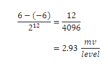
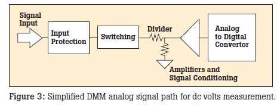
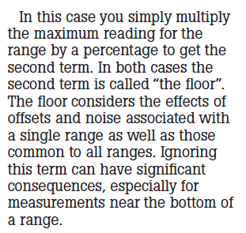
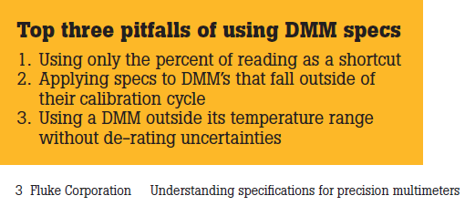

July 22, 2011
"On the other hand, thermocouples do
not exhibit a linear
relationship between voltage and temperature
for such non-linear
transducers, one must rely on the manufacturer’s calibration curves or
directly determine the voltage signal relationship."
The word temperature was missing.
_______________[I sent the following in an
email on July 21]__________________________________
With regard to thermocouples your statement is correct and
linearization is required for good accuracy. The Vernier specification
for their type K thermocouple shows
Typical Accuracy
0ºC to
900ºC 2.2ºC
–200ºC to 0ºC
5ºC
900ºC to 1400ºC
15ºC
Which leads me to believe that Vernier are not concerned with accuracy
for the full temperature range of the thermocouple. If we use the
vernier type K thermocouple I believe it is not linearized.
The vernier documentation is not clear on this, but on
http://www.vernier.com/til/1440.html
it says the sensor can be calibrated with a two point
calibration! (the procedure for the calibration is given on page
3 of
http://www2.vernier.com/booklets/tca-bta.pdf
).
The error if the linerization is not done: from (
http://www.mstarlabs.com/sensors/thermocouple-calibration.html
)


Some polynomials for linearization
http://www.omega.com/temperature/z/pdf/z198-201.pdf
_______________________________[added on
July 22]_________________________________________
In the context of the text quoted from the manual up above a thermistor
would likely be an example that the students could more likely
appreciated since the non-linearity is more pronounced and the
manufacturer can supply a relatively simple equation that relates
resistance to temperature (not the high order polynomials that are
supplied for thermocouples).
the following is quoted from
epcos
.../PDF_StandardizedRT.pdf
July 13, 2011
"Precision
and Significant Figures"
Just wondering if this section should not be in lab 1 instead of lab 2
since lab 1 is sort of the introduction lab?
"Many measurements these
days are made on digital scales. These measurements are easy to record.
If you simply record all the digits that are displayed on the readout,
you will have recorded the measurement to the highest precision
possible for that instrument."
|
If this were included in lab one it could dovetail very well with a
discussion of the resolution of the Analog to Digital conversion. For
example if the students are using the Vernier differential voltage
probe they can calculate the maximum possible resolution of a 12 bit
Analog to Digital conversion because we know the LabQuest mini does a
12 bit conversion.
- there are 212 quantization levels.
- The differentail voltage probe is usable between -6 and +6
volts
- The voltage of each quantization level for the differential
voltage probe is

- The standard voltage probe has a range of -10 to +10 volts so
it has a resolution of 4.88 mv/level
- the raw 0-5 volt input of the breadboard probe has a
resolution of 1.22 mv/level (input used for the custom static pressure
sensor in new lab 3)
- given this resolution one can calculte the resolution of
the pressure as P = 10.87 (Vs
- Vso) kPa which implies
Pres = 10.87*1.22(10-3)
Pres = 0.0133 kPa/level
- The current probe ranges from -600 mA to +600 mA so the
resolution is 0.293 mA/level
From Fluke document
Understanding specifications for precision multimeters
(I needed to provide my email
address to get access to this document at
http://support.fluke.com/calibration-sales/Download/Asset/2547797_6203_ENG_B_W.PDF)

|
comments on this fluke block diagram
- the triangle between te divider
and the Analog to Digital Converter represents an amplifier and it
should be pointing the other way!
- the diagram would be more complete if
- it showed a display
- it also showed an embedded computer/digital
signal processor between the Analog to Digital Converter and the
display.
- for DC measurements it will take multiple samples
and do some digital filtering
- for true RMS measurements it needs to (definitely
need a microprocessor for this)
- take a large number of samples each cycle
- calculate the square of each sample
- find the average
- take the square root
|
For the average digital instrument we use the
manufacturer does not
specify the resolution of the analog to digital conversion but give the
resolution in a different format. For example with our Fluke 117 meters
we are given the following information
From Fluke True-rms Miltimeters manual (114,
115, 117)

- looking at the DC Volts 6 V Range they say the Resolution is
0.001 V. In this case the "resolution" has a different meaning than in
the discussion I gave above. This is the resolution to which the meter
reports the voltage. In the "Accuracy" Column they say the accuracy is
0.5% + 2 counts. By two counts they mean 2 times the stated resolution.
This means that actual reporting resolution is 2*0.001 = 0.002 volts.
Looking to fluke documents for some understanding of what this actually
means I find the following statement
"Fluke uses a confidence
of 99 %, which corresponds to
2.6 standard deviations on a
normal distribution."
So with the A to D discussion up above I was
giving the absolute resolution of a single sample based on the number
of quantization levels. Fluke is not doing that here. The meter take
multiple samples over a period of time and then reports an average
value with 99% confidence. There is always noise in a digital meter and
this causes the ADC readings to fluctuate. Noise is a random
fluctuation
added to the actual signal. If the noise is at least a little bigger
than the quantization levels and averaging is done with enough samples
the reported resolution could actually be better than the absolute ADC
resolution.


